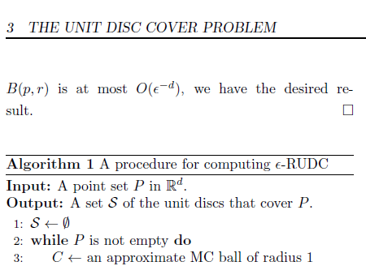
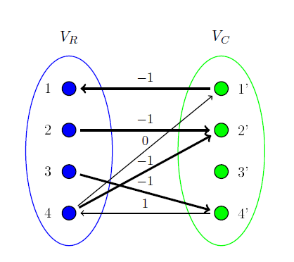
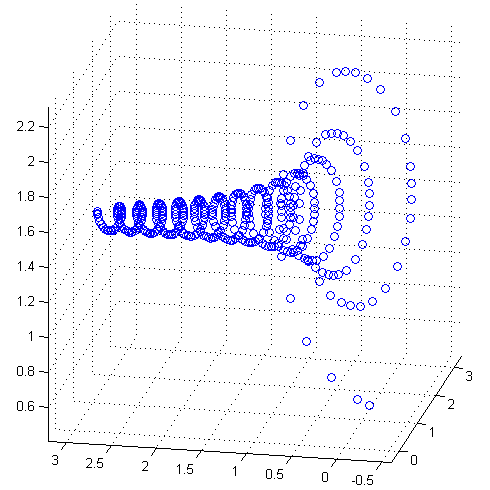
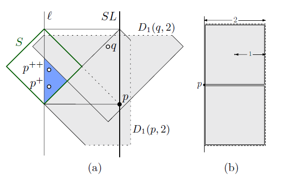
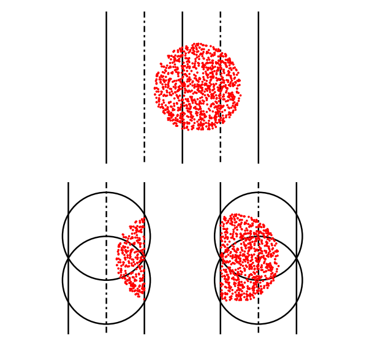
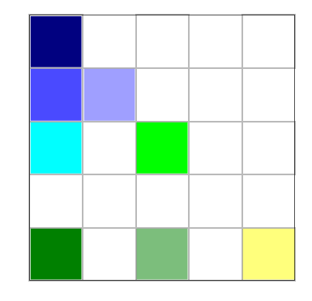
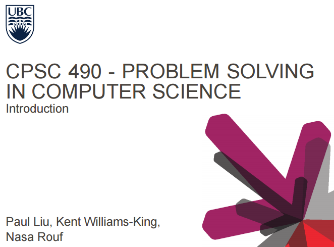

Hi! My name is Paul Liu. I am currently a first year Computer Science Master's student at the University of British Columbia. This website exists mainly for me to exercise my web design skills (or lack thereof). If you have any questions about this page, send me a message! I'm always free to chat!
For work related matters, my CV can be found here.
I have a blog at http://hippomath.blogspot.ca/. I usually post when I want to procrastinate on my work, like now.
Feel free to email me at paul.liu.ubc@gmail.com.
-

Computational Geometry in High Dimensional Spaces
A class project for CPSC 536N: Randomized Algorithms. In this paper I review Indyk's classic result on high dimensional nearest neighbour queries, and try to apply similar techinques to the Unit Disc Cover (UDC) problem in high dimensional spaces. The paper contains a novel approximation algorithm for a relaxed version of the UDC problem when the dimension is large. See the full paper here.
-

An exploration of matrix equilibration
A class project done CPSC 517: Sparse Matrix Computation. In this paper I review several algorithms that scales the infinity norm of each row and column in a given matrix to 1. Algorithms are provided for symmetric and unsymmetric matrices, as well as cases for which only the matrix-vector products can be obtained. See the full paper here.
-
ubc-autologin
a small chrome extension to automatically login into all UBC services. find out more here.
-

uni-phys-contest
a fun project done for the 2012 international university physics contest. the figure above is a model of a ping-pong ball spinning at 100 rad/s without drag. see the full paper here.
-

A 4-approximation for the Unit Disk Cover problem
This work is an improved result of my earlier result: A fast 25/6-approximation for the minimum unit disk cover problem.
-

A fast 25/6-approximation for the minimum unit disk cover problem
Given a point set P in 2D, what is the minimum number of unit radius discs that covers all of the points? This is called the Unit Disk Cover (UDC) problem and has a wide variety of applications in facility location, motion planning, and image processing. Unfortunately, UDC is also NP-Hard. In this work we present simple and practical 25/6 - approximation algorithms for UDC with runtime O(n log n) and space O(n). This algorithm additionally extends to discs in any Lp norm.
-

SYM-ILDL: Incomplete LDL^T Factorization of Symmetric Indefinite and Skew-Symmetric Matrices
A software package for the solution and preconditioning of symmetric indefinite and skew-symmetric linear systems. This software package is quite easy to use and includes a Matlab interface. Matrices with millions of columns and hundreds of millions of non-zeros have been tested. See more information here. This paper arose from my sym-ildl project.
-

CS490 - Problem Solving in Computer Science
Though I am only a Master's student, I did get the pleasure of teaching CS490 when I was an undergraduate. CS490 is a Student Directed Seminar, and is a 3 credit course organized by senior students at UBC. Students are free to teach whatever they want (subject to a review by the UBC CS department of course), similar to MIT's independent activities period, but with the time commitment of a regular course. CS490 is typically taught as a Introduction to Programming Contests course by members of the UBC ACM Team. It was lots of fun teaching the course! See here for the course webpage.